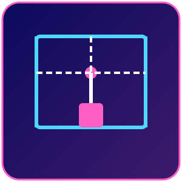
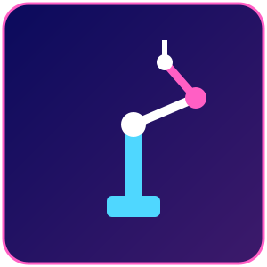
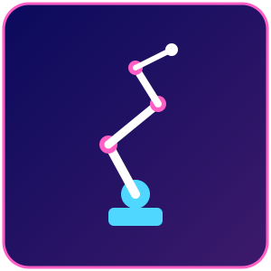
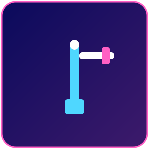
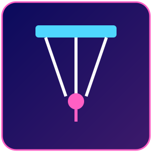
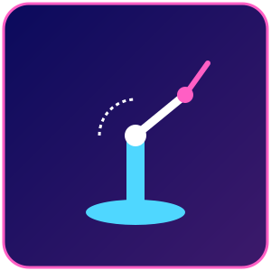

Os robôs industriais são classificados principalmente pela sua cinemática, ou seja, pela forma como os eixos se movem para posicionar a ferramenta de trabalho no espaço. Escolha um modelo abaixo para ver conceito, princípio de funcionamento, características técnicas, aplicações, integração com IoT e exemplos comerciais.

Movimenta-se em três eixos lineares (X, Y, Z), como um pórtico. Ideal para movimentos retos e de alta precisão.

Braço com dois eixos rotativos horizontais e um eixo vertical. Muito rápido em movimentos de "pick and place".

De 4 a 7 juntas rotativas, imitando um braço humano. O mais versátil dos modelos industriais.

Combina uma junta rotativa na base com eixos lineares, gerando uma área de trabalho em formato cilíndrico.

Estrutura paralela suspensa, em formato de aranha. Extremamente rápido para picking leve em linhas de produção.

Também chamado esférico. Combina rotação de base, inclinação de ombro e extensão linear do braço.

Os "cobots" trabalham lado a lado com pessoas, com sensores de força e segurança que interrompem o movimento em caso de contato.